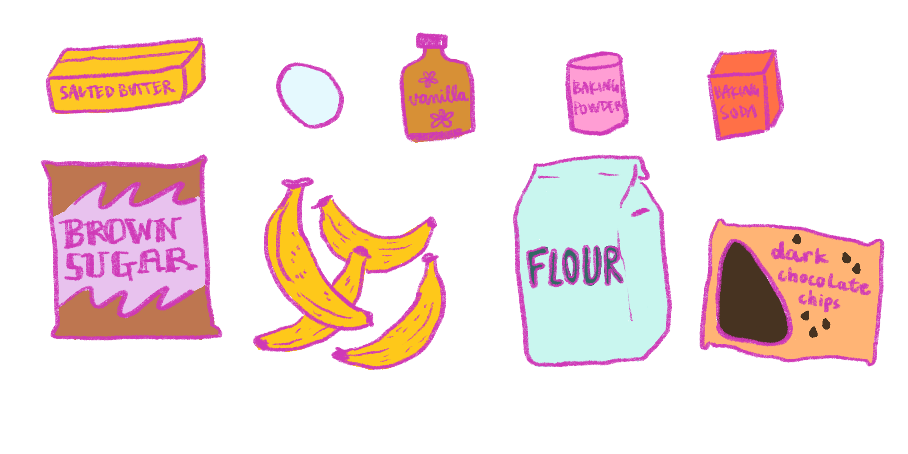
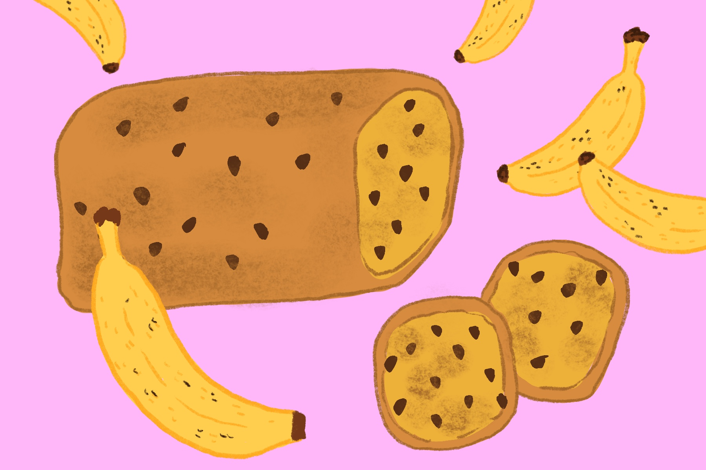

ingredients:
- 1 stick salted butter
- 1 cup brown sugar
- 1 large egg
- 3-4 ripe bananas
- 1 teaspoon of vanilla extract
- 2 cups all purpose flour
- 1 teaspoon baking powder
- ½ teaspoon baking soda
- 1 cup dark chocolate chips
directions:
- Preheat oven to 350 degrees F
- Spray pan with nonstick spray and sprinkle flour. The flour helps prevent the bread from sticking.
- In a large bowl, cream butter and sugar together until smooth. Whisk in the egg then add the mashed bananas and vanilla. Mix until well combined.
- Add the flour, baking soda, baking powder, and salt. Mix together, don’t overmix! Fold in chips.
- Pour into the pan and bake for 55-65 minutes. Let cool for 30 minutes.
